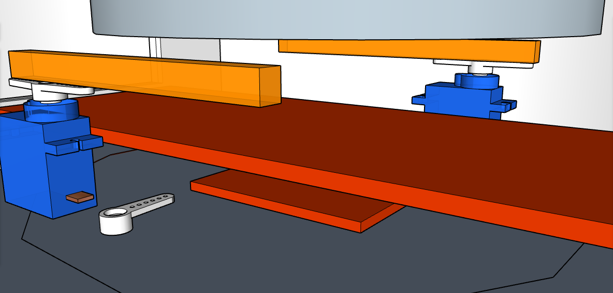
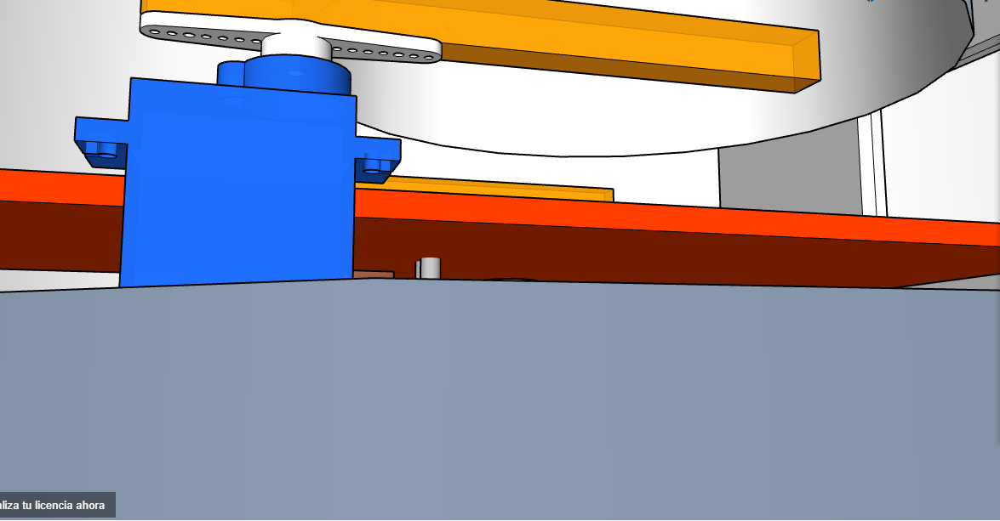
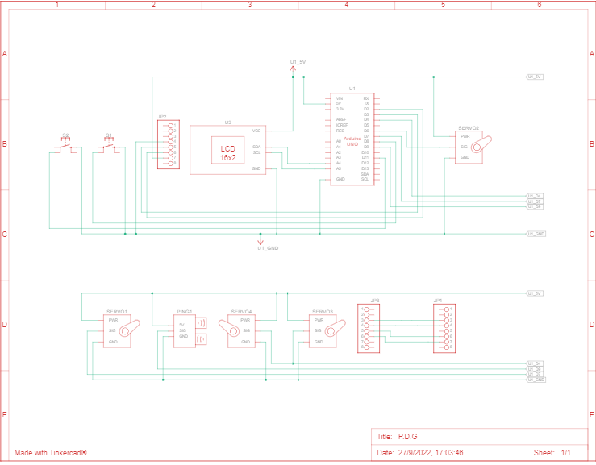

Modelado 3D
Este es el modelado 3d del prototipo, fue diseñado en la aplicacion
sketchup.com, el modelado exterior del prototipo es el presentado aqui
podemos ver una forma circular, con funcion de una tapa que puede abrirse
y cerrarse con ayuda de los servo motores de apoyo, con estos se da una idea
de automatizacion mayor al proyecto
Esta parte de modelado 3d muestra el interior de la caneca,
donde se planea que caigan las basuras, en esta supericie naranja
son separadas para ser recogidas despues de ser usadas en los horarios de los estudiantes
muestrales

Vista de otra perspectiva a la zona de entrada de basuras y mayor plano de
los motores de movimiento

Circuito esquematico y simulado
Aqui podemos ver una simulacion creada con el programa tinkercad.com
donde se ha simulado y se ha mostrado todos los componentes electronicos que se necesitan con
este proyecto eceptuando los que no estan inluidos en la aplicacion

Aqui tenemos un circuito esquematico el cual nos muestra el mismo
circuito anterior mostrado pero de una manera mas propia de la electronica
Programacion
ENCUESTA DE SATISFACCION
ㅤpara tener una opinion mas clara se ha diseñado una encuesta de satisfaccion para
el lector donde podra dar su opinion acerca de su experiencia en la pagina